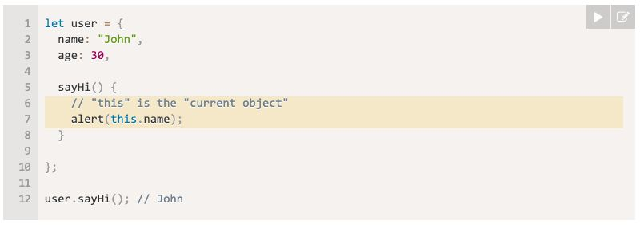

Week 03
Notes
From the book: Javascript Novice to Ninja 2nd eddition by Darren Jones
Chapter 5,6,7
Object Method: This
- An example of an object sysntx can be found bellow
Methods
- A function that is a property of an object is called its method.
- Object Literal is better to use
"this in methods"
- When an object method needs to access the information stored in the object
use "this"
- Example

- Another way to do it without using the keyword "this"
- The code above is another way to write the syntax but is unreliable
- This can be used in any function, even if it’s not a method of
an object.
- Be carefull when using "this" because it can led to other problems and error
out the code
- Functions that are stored in object properties are called “methods”.
- Methods allow objects to “act” like object.doSomething().
- Methods can reference the object as this.
- The value of this is defined at run-time.
- When a function is declared, it may use this, but that this has no value until
the function is called.
- A function can be copied between objects.
- When a function is called in the “method” syntax: object.method(), the value of
this during the call is object.
Object Literals
- An object in JavaScript is a self-contained set of related values and functions.
They act as a collection of named properties that map to any JavaScript value such
as strings, numbers, booleans, arrays and functions. If a property’s value is a
function, it is known as amethod.
- One way to think about an object is that it’s like a dictionary where you look
up a property name and see a value. It's like a database of values
- Objects are often used to keep any related information and functionality together
in the same place. For example, if you wrote functions that found the perimeter and
area of a square, you might want to group them together as methods of the same object
that also included a length property.
- An object literal is an object that is created directly in the language by wrapping
all its properties and methods in curly braces {} . Object literals are a
distinguishing feature of the JavaScript language, as they allow objects to be
created quickly without the need for defining a class. They also provide a useful way
of organizing your code without polluting the global namespace.
- Object literal example that describes the Man of Steel:
- All objects are mutable at any time when a program is running. This means that
its properties and methods can be changed or removed, and new properties and
methods can be added to the object, even if it was declared using const .
Document Object Model
- The Document Object Model (DOM) allows you to access elements of a web
page and enable interaction with the page by adding and removing elements,
changing the order, content and attributes of elements, and even altering
how they are styled.
- The Document Object Model, or DOM for short, represents an HTML
document as a network of connected nodes that form a tree-like structure.
- The DOM treats everything on a web page as a node. HTML tags, the text
inside these tags, even the attributes of a tag are all nodes. The HTML
tag is the root node, and every other part of the document is a child
node of this.
- The DOM level 2 specification was published in 2000 and introduced the
popular getElementById() method, which made it much easier to access
specific elements on a web page. The DOM level 3 specification was
published in 2004, and since then the W3C has abandoned using levels.
The DOM specification is developed as aliving standard.
Getting An Element By Its ID
- The getElementById() method does exactly what it says on the tin.
It returns a reference to the element with a unique id attribute that
is given as an argument. For example, we can get a reference to the
'h1' heading element with the id of 'title' in the 'heroes.html'
page by writing this in the console:
- Example: const h1 = document.getElementById('title');
- Every id attribute should be unique to just one element
- It’s a very quick way of finding elements in a document.
- It’s also supported in all the major browsers, and is probably
the most commonly used method of accessing elements on a web page.
Get Elements By Their Tag Name
- getElementsByTagName() will return a live node list of all the
elements with the tag name that is provided as an argument. For example,
we can get all the list items (HTML tag of li ) in the document using this code:
- Example: const listItems = document.getElementsByTagName('li');
- As this is a node list, we can use the index notation to find
each individual paragraph in the list:
Get Elements By Their Class Name
- getElementsByClassName() will return a live node list of all
elements that have the class name that is supplied as an argument.
For example, we can return a collection of all elements with the
class of 'hero' using the
following code: "const heroes = document.getElementsByClassName('hero');"
Events
- Events are another part of the DOM and they are what provides the link
between the web page and user interactions. Every time a user interacts
with a web page, such as clicking on a link, pressing a key, or moving
a mouse, an event occurs that our program can detect and then respond to.
Event Listeners
- Event listeners are like setting a notification to alert you when
something happens. Instead of the program having to constantly check
to see if an event has occurred, the event listener will let it know
when the event happens, and the program can then respond appropriately.
This allows the program to continue with other tasks while it waits for
the event to happen.
- Example:
- The following code can be used to attach an event listener to the
document that fires when the user clicks anywhere on the page: